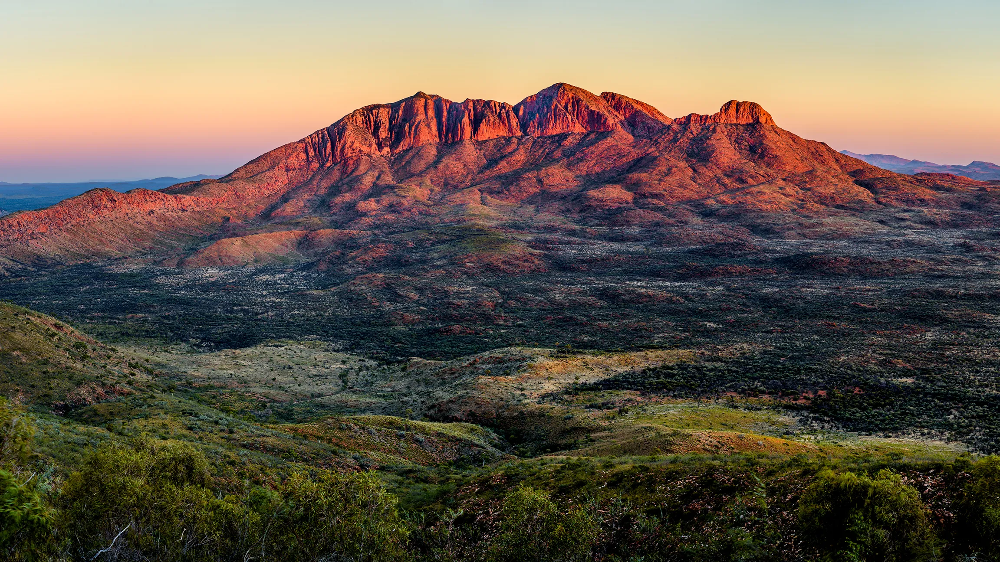
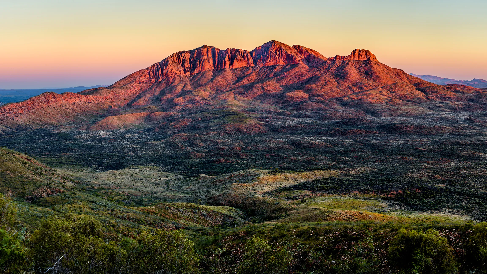

AUSTRALIA

There’s no doubt Australia is one of the most remote, fascinating, and highly developed countries in the world.
Endowed with a myriad of natural wonders, plenty of wildlife, dazzling beaches, cosmopolitan metropolises, and large expanses of the outback, it’s easy to see why this captivating country is such a complete travel destination. It not only matches every taste, budget, age, or interest out there, but it also delivers some unique experiences almost impossible to find somewhere else. From amazing sightseeing to fabulous land and aquatic adventures, there’s absolutely nothing you can’t do during your holiday in Australia.
However, as often happens in life, good things are the hardest to come. Obviously it’s not easy to decide on visiting one of the world’s most remote countries – long way, short time, and sometimes pretty expensive flights. Nevertheless, according to those who’ve already taken the plunge, all these are nothing compared to the wonderful Australian experience. Once you’ll be in, you’ll never want to leave. Besides, Australia is so much more than just a paradise for adventure seekers, it is a delight for foodies, art lovers, and budget travelers.
 
